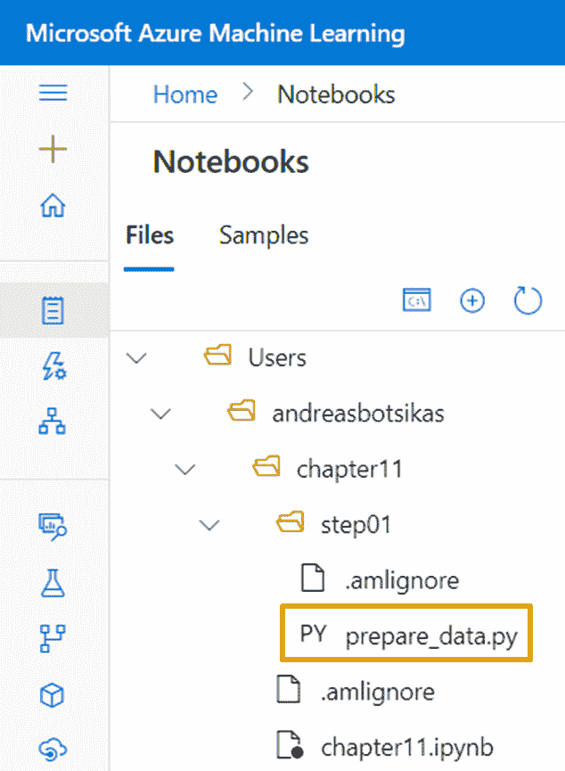
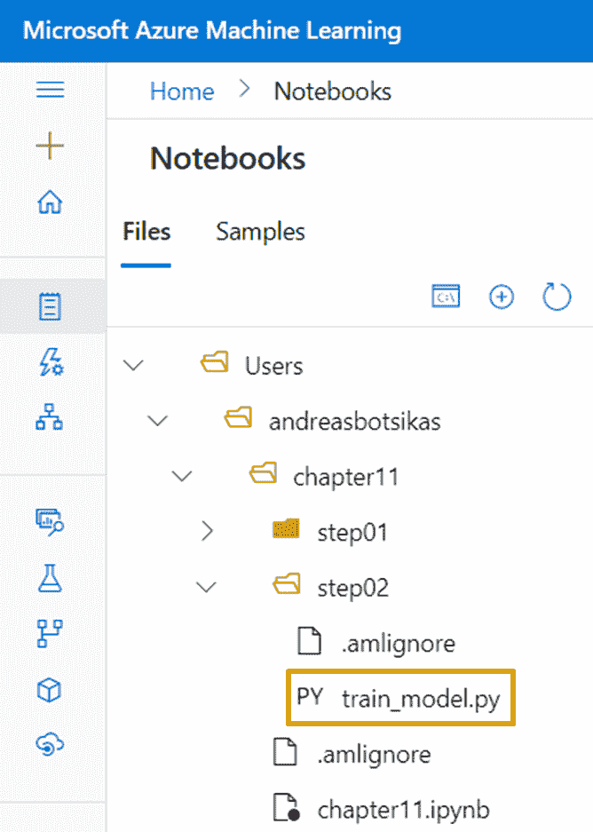

第十一章:使用管道
在本章中，您将学习如何创作可重复的流程，定义由多个步骤组成的管道。您可以使用这些管道来创作转换数据的训练管道，然后训练模型，也可以使用它们通过预先训练的模型来执行批量推理。一旦注册了其中一个管道，就可以使用 HTTP 端点或通过 SDK 来调用它，甚至可以配置它们按计划执行。有了这些知识，你将能够通过使用 Azure 机器学习 ( AzureML ) SDK 来实现和消费管道。
在本章中，我们将讨论以下主要话题:
- 了解 AzureML 管道
- 创作管道
- 发布管道以将其作为端点公开
- 安排循环管道
技术要求
您需要访问 Azure 订阅。在该订阅中，您将需要一个packt-azureml-rg。你将需要一个Contributor或者OwnerT3，如 第二章 、部署 Azure 机器学习工作区资源中所述。
你还需要对 Python 语言有一个基本的了解。代码片段面向 Python 版或更高版本。你还应该熟悉在 AzureML studio 中使用笔记本的体验，这在 第八章 ，用 Python 代码做实验中有所涉及。
本章假设您已经注册了您在第十章 、理解模型结果中生成的贷款数据集。还假设您已经创建了一个名为 cpu-sm-cluster 的计算集群，如 第 7 章 、azure ml Python SDK中的使用计算目标部分所述。
你可以在 GitHub 的以下网址找到本章的所有笔记和代码片段:http://bit.ly/dp100-ch11。
了解 AzureML 管道
在 第 6 章 、视觉模型培训和发布中，您看到了如何使用构建框来设计培训流程。与这些工作流类似，AzureML SDK 允许您创作编排多个步骤的Pipelines。例如，在本章中，您将编写一个包含两个步骤的Pipeline。第一步预处理Environment。
重要说明
不要将Pipelines与你在 第十章 、理解模型结果中读到的Pipelines混淆。Pipelines是您想要训练并用于推理的实际模型类的包装器。
AzureML SDK 提供了相当多的构建块，您可以使用它们来构建一个Pipeline。图 11.1 包含了你在考试和现实生活中可能遇到的最流行的类代码:
图 11.1–azure ml SDK 中可用于创作管道的类
管道是核心的类，它定义了将多个步骤缝合在一起的工作流。您可以通过使用 PipelineParameter 类定义参数来将参数传递给管道。这些参数可以在管道内的一个或多个步骤中被引用。一旦完成了管道的定义，就可以发布它，并在 AzureML 工作空间中将其注册为版本化对象，可以使用 PublishedPipeline 类引用该对象。这个发布的管道有一个端点，您可以使用它来触发其执行。如果您愿意，您可以定义一个调度，并让这个 PublishedPipeline 类在特定的时间间隔触发。 PipelineData 定义了临时存储，其中一个步骤可以丢弃一些文件，供下一个步骤拾取。这两个步骤之间的数据依赖关系在管道中创建了一个隐含的执行顺序，这意味着依赖步骤将等待第一个步骤完成。你将在本章中用到所有这些类。
在 azureml.pipeline.steps 模块中，您将找到所有可用的步骤。最常用的步骤如下:
- PythonScriptStep :这个步骤允许您执行 Python 脚本。您将在本章中使用这一步骤。
AutoMLConfig你在 中看到的对象第九章优化 ML 模型。HyperDriveConfig你在 第九章看到的参数优化 ML 模型。- DataTransferStep :一个管道步骤，允许你在 AzureML 支持的存储选项之间传输数据。
- DatabricksStep :这个允许您在附加的 DataBricks 集群中执行 DataBricks 笔记本、Python 脚本或 JAR 文件。
- 代表一般训练脚本的类。一些特定于框架的估算器继承了通用的
Estimator类，比如TensorFlow和PyTorch。为了在你的管道中加入一个估算器，你应该使用一个EstimatorStep。整个Estimator类及其派生物已经被弃用，取而代之的是ScriptRunConfig，你已经在前面的章节中使用过了。如果在考试期间，您看到对EstimatorStep的不赞成引用，您可以将其视为PythonScriptStep。
管道的最后一个主要部分是流经管道的数据。
(dstore,"/samples/diabetes")tuple 来指示当您调用一个TabularDataset的register_pandas_dataframe方法时您想要存储数据的位置。您可以传递等价的DataPath(datastore=dstore, path_on_datastore="/samples/diabetes")，而不是那个元组。outputs文件夹被自动上传到Run执行。与该文件夹类似，您可以定义其他本地文件夹，这些文件夹将自动上传到目标数据存储中的目标路径。在本章中，您将使用该类将生成的模型存储在默认 blob 存储帐户中的特定位置。- DataReference 表示数据存储中的路径，可用于描述数据在运行中如何以及在哪里可用。它不再是 AzureML 中推荐的数据引用方法。如果你在一个过时的试题中遇到它，你可以把它当作一个数据路径对象。
在本节中，您了解了可以用来构建 AzureML 管道的构建块。在下一节中，您将获得一些使用这些类的实践经验。
创建管道
- 它从注册的数据集中加载数据，并将其分成训练数据集和测试数据集。这些数据集被转换成
step01需要的特殊构造。 - It loads the pre-processed data and trains a
/models/loans/folder of the default datastore attached to the AzureML workspace. You will be writing the code for this step within a folder namedstep02.每一步都是一个单独的 Python 文件，使用一些参数来指定从哪里读取数据以及将数据写入哪里。这些脚本将利用与你在第八章 、中创作的脚本相同的机制，试验 Python 代码。本章的不同之处在于，您将创建一个
Pipeline来一个接一个地调用这些步骤，而不是分别调用每个 Python 脚本。在图 11.2 中，您可以看到每个脚本将要拥有的全部输入和输出，以及您需要为要执行的每个步骤配置的参数:
图 11.2–每个管道步骤的输入和输出
根据图 11.2 ，对于每一步，您都需要定义计算目标和将用于执行特定 Python 脚本的Environment。尽管每个步骤可以有一个单独的计算目标和一个单独的指定的Environment，但是您将使用相同的Environment和相同的计算目标来运行这两个步骤，以简化代码。您将使用现成的Environment，它包含标准的数据科学包，包括您的脚本将需要的light GBM 库。您将执行您在第 7 章 、azure ml Python SDK中创建的 cpu-sm-cluster 集群中的步骤。
您将从创作Pipeline开始，然后您将创作每个步骤所需的实际 Python 脚本。导航到chapter11，然后创建一个名为chapter11.ipynb的笔记本，如图图 11.3 所示:
图 11.3–将第 11 章笔记本添加到您的工作文件中
打开新创建的笔记本，按照步骤使用 AzureML SDK 创作 AzureML 管道:
- You will start by getting a reference to your workspace. Then you will get references to the
loansdataset and thecpu-sm-cluster. Add the following code to a cell in your notebook:from azureml.core import Workspace ws = Workspace.from_config() loans_ds = ws.datasets['loans'] compute_target = ws.compute_targets['cpu-sm-cluster']
- 您将需要创建一个配置对象，该对象将在执行每一步时指示
Environment的使用。为此，您需要使用下面的代码创建一个RunConfiguration:from azureml.core import RunConfiguration runconfig = RunConfiguration() runconfig.environment = ws.environments['
RunConfigurationobject, and you assign the predefinedEnvironmentto itsenvironmentattribute. To help you understand how thisRunConfigurationobject relates to the work you have been doing in Chapter 8, Experimenting with Python Code, theScriptRunConfigyou have been using in that chapter had an optionalrun_configparameter where you could have passed thisRunConfigurationobject you defined in this cell. - You will then need to define a temporary storage folder where the first step will drop the output files. You will use the
PipelineDataclass using the following code:from azureml.pipeline.core import PipelineData step01_output = PipelineData( "training_data", datastore= ws.get_default_datastore(), is_directory=True)
在这段代码中，您将创建一个名为
training_data的中间数据位置，该位置存储为默认数据存储中的一个文件夹，该文件夹在 AzureML 工作空间中注册。您不应该关心这个临时数据的实际路径，但是如果您很好奇，默认存储容器中该文件夹的实际路径类似于azureml/{step01_run_id}/training_data。 - Now that you have all the prerequisites for your pipeline's first step, it is time to define it. In a new cell, add the following code:
from azureml.pipeline.steps import PythonScriptStep step_01 = PythonScriptStep( 'prepare_data.py', source_directory='step01', arguments = [ "--dataset", loans_ds.as_named_input('loans'), "--output-path", step01_output], name='Prepare data', runconfig=runconfig, compute_target=compute_target, outputs=[step01_output], allow_reuse=True )这段代码定义了一个
PythonScriptStep，它将使用step01文件夹中的源代码。它将执行名为prepare_data.py的脚本，传递以下参数:--dataset:这个将loans_ds数据集 ID 传递给那个变量。这个数据集 ID 是一个唯一的as_named_input方法。这个方法在FileDataset和TabularDataset中都可用，并且只有当Run在 AzureML 工作空间中执行时才适用。要调用该方法，您必须提供一个名称，在本例中是loans，它可以在脚本中用来检索数据集。AzureML SDK 将使TabularDataset对象在run对象的input_datasets字典中的prepare_data.py脚本中可用。在prepare_data.py脚本中，您可以使用下面的代码获得对该数据集的引用:run = Run.get_context() loans_dataset = run.input_datasets["loans"]
--output-path: This passes thePipelineDataobject you created in Step 3. This parameter will be a string representing a path where the script can store its output files. The datastore location is mounted to the local storage of the compute node that is about to execute the specific step. This mounting path is passed to the script, allowing your script to transparently write the outputs directly to the datastore.回到您传递给
PythonScriptStep初始化的参数，您定义一个名称，该名称将在图 11.6 中看到的管道的可视化表示中可见。在runconfig参数中，传递您在步骤 2 中定义的RunConfiguration对象。在compute_target参数中，您将引用传递给在步骤 1 中获得的cpu-sm-cluster集群。在
outputs参数中，您传递一个输出数组，该步骤将向该数组发送数据。这个是一个非常重要的参数，用于定义管道中各个步骤的正确执行顺序。尽管您将PipelineData对象作为参数传递给脚本，但是 AzureML SDK 并不知道您的脚本是否将从该位置写入或读取数据。通过将PipelineData对象显式添加到outputs参数中，您将该步骤标记为存储在PipelineData对象中的数据的生产者。因此，在相应的inputs参数中引用相同对象的任何人都需要在这个PythonScriptStep之后执行。如果脚本的输入和
step01文件夹中的源代码自上次执行管道以来没有改变，布尔参数allow_reuse允许您重用这个PythonScriptStep的输出。由于该步骤的唯一输入是TabularDataset的特定版本，所以它不能改变。虽然您在引用TabularDataset时没有指定特定的版本，但是最新的版本会被自动选中。该版本在创建时被固定到管道的定义中。管道将继续在固定版本上执行，即使您创建了新版本的TabularDataset。而且，由于allow_reuse参数被设置为True，这个步骤将只运行一次，从那以后，结果将被自动重用。在本节的末尾，您将看到当您重新运行同一个管道时，这会如何影响管道执行时间。重要说明
如果您想强制管道读取最新版本的
loans_ds变量，将引用最新版本的TabularDataset。在本节结束时，您还将了解如何将训练数据集作为PipelineParameter传递。
- Now that you have defined the
PythonScriptStep, it is time to add the missing Python script to your files. Next to your notebook, under thechapter11folder you are currently working on, add a new folder namedstep01. Within that folder, add a new Python script file namedprepare_data.py. The final folder structure should be similar to the one shown in Figure 11.4:图 11.4–将在管道中执行的 prepare_data.py 脚本的文件夹结构
- Add the following code blocks within the
prepare_data.pyfile. Instead of typing all this code, you can download it directly from the GitHub repository mentioned in the Technical requirements section of this chapter:import argparse from azureml.core.run import Run from sklearn.model_selection import train_test_split import lightgbm as lgb import os
这些都是脚本文件中需要的导入。您将使用
train_test_split方法为具有lgb短别名的lightgbm库创建训练和测试数据集:parser = argparse.ArgumentParser() parser.add_argument("--dataset", type=str, dest="dataset") parser.add_argument("--output-path", type=str, dest="output_path", help="Directory to store datasets") args = parser.parse_args()这个脚本创建了一个
ArgumentParser，它解析您在步骤 4 中定义PythonScriptStep时传递的参数。提醒一下，--dataset参数将包含脚本需要处理的数据集 ID，而--output-path参数将是脚本应该写入转换数据集的本地路径位置:run = Run.get_context() loans_dataset = run.input_datasets["loans"]
解析完参数后，您将获得对
Run上下文的引用。从那里，你得到一个对loans数据集的引用，因为你调用了在步骤 4 中讨论的as_named_input方法，所以你可以使用这个引用。在本节的后面，您将了解如何重写该代码块，以便能够在没有Run上下文的情况下在本地计算机上运行相同的脚本:print(f"Dataset id: {loans_dataset.id}")这个代码块打印您的代码作为引用选择的数据集的 ID。如果打印传递给
--dataset参数的 ID，并存储在args.dataset变量中，您会注意到这两个值是相同的:loans_df = loans_dataset.to_pandas_dataframe() x = loans_df[["income", "credit_cards", "age"]] y = loans_df["approved_loan"].values feature_names = x.columns.to_list() x_train, x_test, y_train, y_test = train_test_split( x, y, test_size=0.2, random_state=42, stratify=y )
在这个代码块中，您将数据集加载到内存中，并使用
train_test_split方法将数据集分成训练和测试特征(x_train和x_test)以及训练和测试标签(y_train和y_test):train_data = lgb.Dataset(x_train, label=y_train, feature_name=feature_names) test_data = lgb.Dataset(x_test, label=y_test, reference=train_data)
特征和标签然后被转换成
train_data和test_data，它们是Dataset对象。Dataset培训和验证的格式。注意，存储在test_data变量中的验证数据集需要引用训练数据(train_data)。这是一个由output_path文件夹嵌入的故障保护机制，如果它还不存在的话，然后使用Dataset的本机save_binary方法将数据集序列化为一个为存储和加载而优化的二进制文件。与您在 第 8 章 、中使用 Python 代码创建的脚本相反，
prepare_data.py文件不能作为_OfflineRun在您的本地计算机上执行。这是因为您依赖于input_datasets字典，该字典只有在Run在 AzureML 工作空间中执行时才可用。如果您想在Pipeline中使用这个文件之前在本地测试它，您可以使用下面的代码:run = Run.get_context() loans_dataset = None if type(run) == _OfflineRun: from azureml.core import Workspace, Dataset ws = Workspace.from_config() if args.dataset in ws.datasets: loans_dataset = ws.datasets[args.dataset] else: loans_dataset = Dataset.get_by_id(ws, args.dataset) else: loans_dataset = run.input_datasets["loans"]
这段代码检查这是否是脱机运行。在这种情况下，它首先获得一个对工作空间的引用，如您在第 8 章 ，中看到的，尝试 Python 代码，然后它检查存储在
args.dataset变量中的--dataset参数是否是数据集名称。如果是，数据集的最新版本被赋给loans_dataset变量。如果它不是一个名称，脚本假定它是一个 GUID，它应该表示特定数据集版本的 ID。在这种情况下，脚本尝试使用get_by_id方法来检索特定的数据集，或者如果传递的值不是已知的数据集 ID，则抛出一个错误。如果运行是在线的，您仍然可以使用input_datasets字典来检索数据集引用。 - Back to your notebook, you will start defining the prerequisites for the second step, the model training phase of your
Pipeline. In Figure 11.2, you saw that this step requires a parameter namedlearning_rate. Instead of hardcoding the learning rate hyperparameter of thePipelineParameterto pass in this value. This parameter will be defined atPipelinelevel, and it will be passed to the training script as an argument, as you will see in Step 9. To create such a parameter, use the following code:from azureml.pipeline.core import PipelineParameter learning_rate_param = PipelineParameter( name="learning_rate", default_value=0.05)
这段代码定义了一个名为
learning_rate的新PipelineParameter。默认值将是0.05，这意味着当您执行管道时，您可以省略传递该参数，并且将使用该默认值。您将在稍后的步骤 13 中看到如何执行Pipeline并指定一个不同于默认值的值。 - You will store the trained model in the
/models/loans/folder of the default datastore attached to the AzureML workspace. To specify the exact location where you want to store the files, you will use theOutputFileDatasetConfigclass. In a new notebook cell, add the following code:from azureml.data import OutputFileDatasetConfig datastore = ws.get_default_datastore() step02_output = OutputFileDatasetConfig( name = "model_store", destination = (datastore, '/models/loans/'))
在这个脚本中，您将获得对默认数据存储的引用。然后，创建一个
OutputFileDatasetConfig对象，将一个元组传递给destination参数。这个元组由您选择的数据存储和该数据存储中的路径组成。您可以选择 AzureML 工作区中附加的任何数据存储。这个OutputFileDatasetConfig对象定义了复制输出的目的地。如果不指定destination参数，将使用默认的/dataset/{run-id}/{output-name}值。注意destination允许您在定义路径时使用占位符。默认值使用当前支持的{run-id}和{output-name}占位符。这些占位符将在适当的时候替换为相应的值。 - Now that you have all the prerequisites defined, you can define the second step of your
Pipeline. In a new cell in your notebook, add the following code:step_02 = PythonScriptStep( 'train_model.py', source_directory='step02', arguments = [ "--learning-rate", learning_rate_param, "--input-path", step01_output, "--output-path", step02_output], name='Train model', runconfig=runconfig, compute_target=compute_target, inputs=[step01_output], outputs=[step02_output] )
类似于您在步骤 4 中创建的
step_01文件夹；这段代码定义了一个PythonScriptStep，它将调用位于step02文件夹中的train_model.py脚本。它将使用您在步骤 7 中定义的PipelineParameter传递给的值来填充--learning-rate参数。它还会将step_01的输出传递给--input-path参数。注意step01_output也被添加到该PythonScriptStep的输入列表中。这迫使step_02等待step_01完成，以便使用存储在step01_output中的数据。最后一个脚本参数是--output-path，在这里传递您在上一步中创建的OutputFileDatasetConfig对象。该对象也被添加到该PythonScriptStep的输出列表中。 - Let's create the Python script that will be executed by
step_02. Next to your notebook, under thechapter11folder you are currently working on, add a new folder namedstep02. Within that folder, add a new Python script file namedtrain_model.py. The final folder structure should be similar to the one shown in Figure 11.5:图 11.5–将在您的管道的 step02 文件夹中执行的培训脚本
- Open the
train_model.pyfile and add the following code blocks to it. Instead of typing all this code, you can download it directly from the GitHub repository mentioned in the Technical requirements section of this chapter:import argparse import os import lightgbm as lgb import joblib parser = argparse.ArgumentParser()
这个块导入文件中需要的所有模块，并创建一个
ArgumentParser来读取将要传递给这个脚本的参数。如果您愿意，您可以使用另一个著名的脚本参数解析库learning_rateargument。注意，这是一个浮点数，其默认值不同于您在步骤 7 中定义的值，这个例子表明这两个默认值不需要相同。执行流水线时，PipelineParameter将定义实际值:parser.add_argument( "--input-path", type=str, dest="input_path", help="Directory containing the datasets", default="../data", ) parser.add_argument( "--output-path", type=str, dest="output_path", help="Directory to store model", default="./model", ) args = parser.parse_args()
然后解析
input_path和output_path，它们是字符串值，指向执行该脚本的计算机中的本地文件夹。最后一行解析传入的参数，并将结果赋给args变量:print(f"Loading data from {args.input_path}") train_data = lgb.Dataset(os.path.join(args.input_path, "train_dataset.bin")) validation_data = lgb.Dataset(os.path.join(args.input_path, "validation_dataset.bin"))解析脚本参数后，将加载训练和验证数据集:
param = { "task": "train", "objective": "binary", "metric": "auc", "num_leaves": 5, "learning_rate": args.learning_rate } model = lgb.train( param, train_set = train_data, valid_sets = validation_data, early_stopping_rounds = 5 )在该代码块中，配置了一个二进制分类训练过程，该过程将使用
auc度量来评估训练进度。early_stopping_rounds参数:output_path = args.output_path if not os.path.exists(output_path): os.makedirs(output_path) joblib.dump(value=model, filename=os.path.join(output_path, "model.joblib"))
- Back to the notebook, it's time you defined the actual
Pipelineyou have been building so far. In a new cell, add the following code:from azureml.pipeline.core import Pipeline pipeline = Pipeline(workspace=ws, steps=[step_01, step_02])
您定义了一个新的
Pipeline对象，传入了一个包含您想要包含的所有步骤的列表。注意，步骤的顺序并不重要，因为真正的执行顺序是由您在这两个步骤之间指定的step01_outputPipelineData依赖关系定义的。 - To execute the pipeline, you will need to submit it in an
Experiment. In a new notebook cell, add the following code:from azureml.core import Experiment experiment = Experiment(ws, "chapter-11-runs") pipeline_run = experiment.submit( pipeline, pipeline_parameters= { "learning_rate" : 0.5 } ) pipeline_run.wait_for_completion()这段代码定义了一个名为
chapter-11-runs的新Experiment，并提交管道运行，将0.5的值传递给您在步骤 7 中定义的learning_rate参数。管道执行的第一个输出是到 AzureML 门户的链接。点击该链接将进入管道执行运行，如图图 11.6 所示:
图 11.6–您在本节中创建的管道的图形表示
假设您试图通过第二次执行您在步骤 13 中编写的代码来重新运行管道。在这种情况下，您会注意到执行几乎是即时的(与您第一次应该看到的一分钟的执行相比，只有几秒钟)。管道检测到没有输入更改，并重用了以前执行的步骤的输出。这演示了步骤 4 中的allow_reuse=True的作用，同时也证明了即使我们没有在步骤 9 中指定该参数，默认值也是True。这意味着，默认情况下，如果输入和代码文件与先前执行的相同，所有步骤都将重用先前的执行。如果您想强制进行重新训练，即使相同的learning_rate变量被传递到管道，您可以在步骤 9 中指定allow_reuse=False。
重要说明
如果您想将训练数据集作为PipelineParameter传递，您必须使用以下代码:
from azureml.data.dataset_consumption_config import DatasetConsumptionConfig
ds_pipeline_param = PipelineParameter(name="dataset ", default_value=loans_ds)
dataset_consumption = DatasetConsumptionConfig("loans", ds_pipeline_param)
使用这段代码并在步骤 4 中传递dataset_consumption对象而不是loans_ds.as_named_input('loans')将允许您在提交要执行的管道时选择输入数据集及其版本。
到目前为止，您已经定义了一个执行两个 Python 脚本的管道。step_01预处理训练数据，并将其存储在中间数据存储中，供step_02提取。从那里，第二步训练一个附加到 AzureML 工作空间的默认数据存储的/models/loans/文件夹。如果您准确地遵循了这些步骤，管道将会成功完成。然而，在现实生活中，编码问题会悄悄出现，您的管道可能无法完成。在下一节中，您将学习如何解决潜在的管道运行时问题。
解决代码问题
到目前为止，你的代码工作起来很有魅力。如果一个脚本有编码问题或者缺少依赖，会发生什么？在这种情况下，您的管道将会失败。在图 11.6 中看到的图形表示中，您将能够识别失败的步骤。如果您想要获得特定子步骤的细节，您必须首先使用您在执行管道时获得的pipeline_run对象的find_step_run来定位它。在笔记本的新单元格中，添加以下代码:
train_step_run = pipeline_run.find_step_run("Train model")[0]
train_step_run.get_details_with_logs()
这段代码查找所有名为0 index 的步骤。这将检索一个StepRun对象，该对象用于您在上一节中定义的step_02文件夹。StepRun继承自基础Run类，公开了get_details_with_logs方法，该方法在 第 8 章 、试验 Python 代码中使用的ScriptRun类中也可用。这种方法在解决依赖关系或脚本代码的潜在问题时非常方便。它产生了许多关于脚本执行的有用信息，包括日志文件。
如果你更喜欢 AzureML studio web 体验，你可以导航到Pipeline run。在管道的图形表示中，选择要查看日志的步骤。查看输出+日志页签中的日志，如图图 11.7 所示:
图 11.7–在网络门户中查看列车模型步骤的日志
到目前为止，您已经学习了如何创作一个Pipeline以及如何解决潜在的运行时错误。您创建的Pipeline尚未在您的工作区中注册，这将在下一节中进行。
发布管道，将其作为端点公开
到目前为止，您已经使用 AzureML SDK 定义了一个管道。如果您必须重新启动 Jupyter 笔记本的内核，您将丢失对您定义的管道的引用，并且您将必须重新运行所有的单元格来重新创建管道对象。AzureML SDK 允许您发布一个管道，有效地将其注册为工作区内的版本化对象。一旦发布了管道，就可以在没有构建管道的 Python 代码的情况下提交管道。
在笔记本的新单元格中，添加以下代码:
published_pipeline = pipeline.publish( "Loans training pipeline", description="A pipeline to train a LightGBM model")
这段代码发布管道并返回一个PublishedPipeline对象，即在工作空间中注册的版本化对象。该对象最有趣的属性是endpoint，它返回 REST 端点 URL 来触发特定管道的执行。
要调用发布的管道，您需要一个身份验证头。要获取这个安全头，可以使用InteractiveLoginAuthentication类，如下面的代码片段所示:
from azureml.core.authentication import InteractiveLoginAuthentication auth = InteractiveLoginAuthentication() aad_token = auth.get_authentication_header()
然后，您可以使用以下代码，使用 Python requests包向特定端点发出POST请求:
import requests
response = requests.post(published_pipeline.endpoint,
headers=aad_token,
json={"ExperimentName": "chapter-11-runs",
"ParameterAssignments": {"learning_rate" : 0.02}})
print(f"Made a POST request to {published_pipeline.endpoint} and got {response.status_code}.")
print(f"The portal url for the run is {response.json()['RunUrl']}")
这段代码只需要 URL，而不需要实际的管道代码。如果您丢失了端点 URL，您可以通过PublishedPipeline类的list方法用代码检索它，该方法列举了工作区中注册的所有发布的管道。前面的脚本使用 HTTP POST 动词调用REST端点，并将值0.02作为learning_rate参数传递。
重要说明
如果你不熟悉POST法，也称为动词，你可以在延伸阅读部分了解更多。
这个 HTTP 请求产生的对象包含关于管道执行的信息，包括RunUrl，它允许您访问 AzureML studio 门户来监控管道执行。
当您发布管道时，注册的对象在 AzureML studio 门户中变得可用。如果您导航到端点 | 管道端点，您将找到您所有已发布管道端点的列表，如图图 11.8 所示:

图 11.8–发布的管道端点
一旦您选择了一个管道，您就可以使用一个图形向导来触发它，该向导允许您指定管道参数和管道将在其下执行的实验。
在本节中，您看到了如何发布管道，以便能够在没有管道定义代码的情况下重用它。您看到了如何使用REST端点触发注册的管道。在下一节中，您将学习如何安排管道来安排每月再培训。
安排循环管道
当第三方系统需要在特定事件发生后调用训练过程时，能够通过发布的REST端点调用管道是非常好的。例如，假设您正在使用 Azure 数据工厂从本地数据库复制数据。您可以使用机器学习执行管道活动并触发发布管道，如图图 11.9 所示:
图 11.9–复制活动后触发 AzureML 发布管道的示例 Azure 数据工厂管道
如果您希望安排管道每月触发一次，您需要像在上一节中那样发布管道，获取发布的管道 id，创建一个ScheduleRecurrence，然后创建Schedule。回到你的笔记本上，在那里你已经找到了published_pipeline。使用以下代码添加一个新单元格:
from azureml.pipeline.core.schedule import ScheduleRecurrence, Schedule
from datetime import datetime
recurrence = ScheduleRecurrence(frequency="Month",
interval=1,
start_time = datetime.now())
schedule = Schedule.create(workspace=ws,
name="chapter-11-schedule",
pipeline_id=published_pipeline.id,
experiment_name="chapter-11-scheduled-run",
recurrence=recurrence,
wait_for_provisioning=True,
description="Schedule to retrain model")
print("Created schedule with id: {}".format(schedule.id))
在这段代码中，您定义了一个每月一次的ScheduleRecurrence。通过指定start_time = datetime.now()，您可以阻止管道的立即执行，这是创建新的Schedule时的默认行为。一旦有了想要使用的递归，就可以通过调用Schedule类的create方法来调度管道执行。您将传入想要触发的published_pipeline的 ID，并指定每次执行的实验名称。
重要说明
调度特定管道的执行没有任何意义，因为两个步骤都有allow_reuse=True，所以不会发生额外的培训。如果您想每个月重新训练一次，您可能希望这个设置为False，并在调用管道调度时强制执行这两个步骤。此外，在调度管道中，通常第一步从附加到 AzureML 工作空间的各种源获取新数据，然后转换数据并训练模型。
如果您想禁用一个预定的执行，您可以使用Schedule类的disable方法。以下代码禁用工作区中的所有计划管道:
from azureml.pipeline.core.schedule import Schedule
schedules = Schedule.list(ws, active_only=True)
print("Your workspace has the following schedules set up:")
for schedule in schedules:
print(f"Disabling {schedule.id} (Published pipeline: {schedule.pipeline_id}")
schedule.disable(wait_for_provisioning=True)
这段代码列出了工作区内所有的活动调度，然后逐一禁用它们。确保您不会意外禁用本应在您的工作区中调度的管道。
总结
在本章中，你学习了如何使用 AzureML SDK 定义 AzureML 管道。这些管道允许您以可重复的方式编排各个步骤。您从定义由两个步骤组成的培训管道开始。然后，您学习了如何触发管道以及如何解决潜在的代码问题。然后发布管道，在 AzureML 工作空间中注册它，并获得一个 HTTP 端点，第三方软件系统可以使用它来触发管道执行。在上一节中，您了解了如何安排已发布管道的重复出现。
在下一章中，你将学习如何操作你在本书中已经训练过的模型。在这种情况下，您将使用在本章中学到的知识来创作批处理推理管道，您可以通过 HTTP 发布和触发它，或者安排它，就像您在本章中学到的那样。
问题
在每一章中，你会发现几个问题来验证你对本章所讨论主题的理解。
- What affects the execution order of the pipeline steps?
a.构造
Pipeline对象时定义步骤的顺序。b.步骤之间的数据依赖关系。
c.所有步骤并行执行，您不能影响执行顺序。
- 是非判断:管道中的所有步骤都需要在同一个计算目标和
Environment中执行。 - 是非判断:
PythonScriptStep默认情况下，如果参数或代码文件中没有任何变化，则重用之前的执行结果。 - You are trying to debug a child run execution issue. Which of the following methods should you call in the
StepRunobject?a.
get_file_namesb.
get_details_with_logsc.
get_metricsd.
get_details - 您刚刚用 Python 代码定义了一个管道。您需要采取什么步骤来安排该管道的日常执行？
延伸阅读
本节提供了一个有用的 web 资源列表，帮助您增加 AzureML SDK 和本章中使用的各种代码片段的知识。
- 关于本章使用的 LightGBM 框架的文档:https://light GBM . readthedocs . io
- HTTP 请求方法:https://www.w3schools.com/tags/ref_httpmethods.asp
- 请求 Python 库进行 HTTP 请求:https://docs.Python-requests.org
- 通过Azure Data Factory:https://docs . Microsoft . com/en-us/Azure/Data-Factory/transform-Data-machine-learning-service执行 AzureML 管道
- 点击 Python 库进行脚本参数解析，创建命令行界面 ( CLI )应用:https://click.palletsprojects.com/